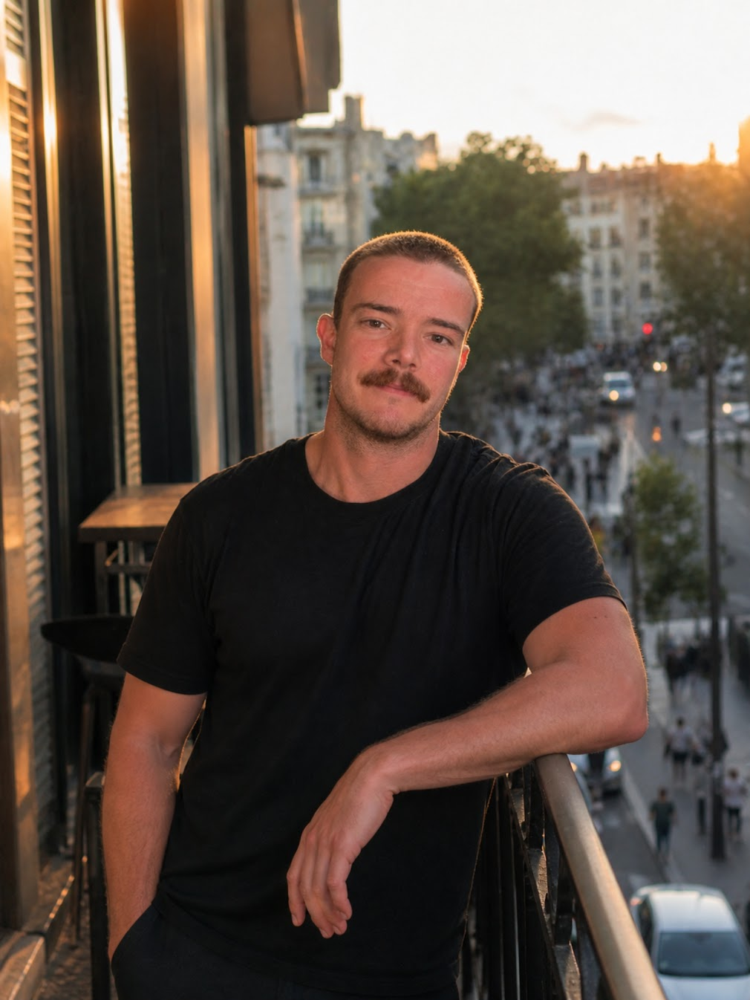

I have spent my life trying to live a life that feels fully inhabited.
Something in me always knew this. Not as a philosophy, as a pull. A bright, persistent furnace that I didn't always have the words for, or the courage to follow, or the life experience to understand. I spent years becoming adapted enough to meet it. The fire was always there. I didn't find it. I grew into it. I had to work to be able to accept it, because I couldn't ignore it.
I am a scientist. I am also an athlete, a photographer, a writer, a mountaineer, a lover, a humanist, a transmitter. I have stood on the summit of Kilimanjaro at dawn and run through the night in the mountains. I have sat with Arctic data at 2am and felt something close to reverence. I have spent days doing grueling training, hours teaching and absorbing the beauty of the Universe. None of these things contradict each other. That is the whole point.
No Smaller Life is built on a single conviction: that the fragmentation of modern existence — the splitting of intelligence from body, of ambition from humanity, of discipline from beauty — is not inevitable. It is a choice. And it can be refused.
This is where I refuse it. Through science, through movement, through photography, through writing, through loving what life has to offer, through the long work of becoming someone capable — physically, intellectually, emotionally, morally. Not optimized. Capable. Alive.
If you are here, you probably already know what it feels like to be larger than the life you have been offered. You are in the right place.